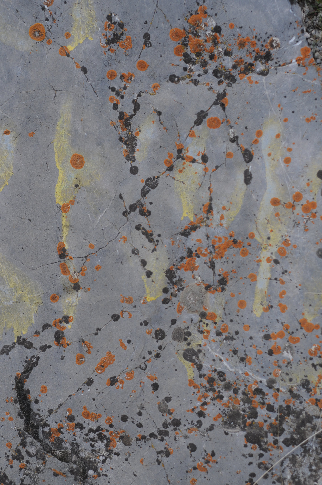

<!DOCTYPE html>
<html xmlns="http://www.w3.org/1999/xhtml" lang="en" xml:lang="en"><head>

<meta charset="utf-8">
<meta name="generator" content="quarto-1.6.37">

<meta name="viewport" content="width=device-width, initial-scale=1.0, user-scalable=yes">

<meta name="author" content="DK">
<meta name="dcterms.date" content="2025-07-03">

<title>Lyric Songs – Events Blog</title>
<style>
code{white-space: pre-wrap;}
span.smallcaps{font-variant: small-caps;}
div.columns{display: flex; gap: min(4vw, 1.5em);}
div.column{flex: auto; overflow-x: auto;}
div.hanging-indent{margin-left: 1.5em; text-indent: -1.5em;}
ul.task-list{list-style: none;}
ul.task-list li input[type="checkbox"] {
  width: 0.8em;
  margin: 0 0.8em 0.2em -1em; /* quarto-specific, see https://github.com/quarto-dev/quarto-cli/issues/4556 */ 
  vertical-align: middle;
}
</style>


<script src="../../site_libs/quarto-nav/quarto-nav.js"></script>
<script src="../../site_libs/quarto-nav/headroom.min.js"></script>
<script src="../../site_libs/clipboard/clipboard.min.js"></script>
<script src="../../site_libs/quarto-search/autocomplete.umd.js"></script>
<script src="../../site_libs/quarto-search/fuse.min.js"></script>
<script src="../../site_libs/quarto-search/quarto-search.js"></script>
<meta name="quarto:offset" content="../../">
<script src="../../site_libs/quarto-html/quarto.js"></script>
<script src="../../site_libs/quarto-html/popper.min.js"></script>
<script src="../../site_libs/quarto-html/tippy.umd.min.js"></script>
<script src="../../site_libs/quarto-html/anchor.min.js"></script>
<link href="../../site_libs/quarto-html/tippy.css" rel="stylesheet">
<link href="../../site_libs/quarto-html/quarto-syntax-highlighting-29e2c20b02301cfff04dc8050bf30c7e.css" rel="stylesheet" id="quarto-text-highlighting-styles">
<script src="../../site_libs/bootstrap/bootstrap.min.js"></script>
<link href="../../site_libs/bootstrap/bootstrap-icons.css" rel="stylesheet">
<link href="../../site_libs/bootstrap/bootstrap-1322888c997fad56b0b4d776d35cf542.min.css" rel="stylesheet" append-hash="true" id="quarto-bootstrap" data-mode="light">
<script id="quarto-search-options" type="application/json">{
  "location": "navbar",
  "copy-button": false,
  "collapse-after": 3,
  "panel-placement": "end",
  "type": "overlay",
  "limit": 50,
  "keyboard-shortcut": [
    "f",
    "/",
    "s"
  ],
  "show-item-context": false,
  "language": {
    "search-no-results-text": "No results",
    "search-matching-documents-text": "matching documents",
    "search-copy-link-title": "Copy link to search",
    "search-hide-matches-text": "Hide additional matches",
    "search-more-match-text": "more match in this document",
    "search-more-matches-text": "more matches in this document",
    "search-clear-button-title": "Clear",
    "search-text-placeholder": "",
    "search-detached-cancel-button-title": "Cancel",
    "search-submit-button-title": "Submit",
    "search-label": "Search"
  }
}</script>


<link rel="stylesheet" href="../../styles.css">
</head>

<body class="nav-fixed fullcontent">

<div id="quarto-search-results"></div>
  <header id="quarto-header" class="headroom fixed-top quarto-banner">
    <nav class="navbar navbar-expand-lg " data-bs-theme="dark">
      <div class="navbar-container container-fluid">
      <div class="navbar-brand-container mx-auto">
    <a class="navbar-brand" href="../../index.html">
    <span class="navbar-title">Events Blog</span>
    </a>
  </div>
            <div id="quarto-search" class="" title="Search"></div>
          <button class="navbar-toggler" type="button" data-bs-toggle="collapse" data-bs-target="#navbarCollapse" aria-controls="navbarCollapse" role="menu" aria-expanded="false" aria-label="Toggle navigation" onclick="if (window.quartoToggleHeadroom) { window.quartoToggleHeadroom(); }">
  <span class="navbar-toggler-icon"></span>
</button>
          <div class="collapse navbar-collapse" id="navbarCollapse">
            <ul class="navbar-nav navbar-nav-scroll ms-auto">
  <li class="nav-item">
    <a class="nav-link" href="../../about.html"> 
<span class="menu-text">About</span></a>
  </li>  
  <li class="nav-item compact">
    <a class="nav-link" href="https://github.com/"> <i class="bi bi-github" role="img">
</i> 
<span class="menu-text"></span></a>
  </li>  
  <li class="nav-item compact">
    <a class="nav-link" href="https://twitter.com"> <i class="bi bi-twitter" role="img">
</i> 
<span class="menu-text"></span></a>
  </li>  
</ul>
          </div> <!-- /navcollapse -->
            <div class="quarto-navbar-tools">
</div>
      </div> <!-- /container-fluid -->
    </nav>
</header>
<!-- content -->
<header id="title-block-header" class="quarto-title-block default page-columns page-full">
  <div class="quarto-title-banner page-columns page-full">
    <div class="quarto-title column-body">
      <h1 class="title">Lyric Songs</h1>
                                <div class="quarto-categories">
                <div class="quarto-category">music</div>
                <div class="quarto-category">friendship</div>
              </div>
                  </div>
  </div>
    
  
  <div class="quarto-title-meta">

      <div>
      <div class="quarto-title-meta-heading">Author</div>
      <div class="quarto-title-meta-contents">
               <p>DK </p>
            </div>
    </div>
      
      <div>
      <div class="quarto-title-meta-heading">Published</div>
      <div class="quarto-title-meta-contents">
        <p class="date">July 3, 2025</p>
      </div>
    </div>
    
      
    </div>
    
  
  </header><div id="quarto-content" class="quarto-container page-columns page-rows-contents page-layout-article page-navbar">
<!-- sidebar -->
<!-- margin-sidebar -->
    
<!-- main -->
<main class="content quarto-banner-title-block" id="quarto-document-content">


<p>Found a set of cassettes.</p>
<p>It was in a bottom drawer of set of 3 vertical drawers, of a stand that no longer graces the living room. It had been relegated to basement duties for a year and 7 years in storage before that.</p>
<p></p>
<p></p>
<p></p>
<p>It brought momentary delight as well as anticipation of listening to 5 hours of 韓国歌曲 Korean Folk Songs.</p>
<p>Even though most of these songs can be found on-line, it is nice to have one’s own copy.</p>
<p>To digitize and to utilize the number of cassette decks made by artisans during the decades of 1980s and 1990s.</p>
<p>And to handle, feel and admire the workmanship and ingenuity that packs an hour of music into a 10.5 (L) x 7 (W) x 1.7 (H) mm bundle.</p>
<p>It has outer sleeve that has a 수채화 (水彩畫) or watercolor paiting on the front and the list of songs on the back, along with the composer of music, the author of lyrics, and the performer.</p>
<p>The cassette housing has an abbreviated song list, the manufacturer and the production date, 10 June 1985</p>
<hr>
<p></p>
<p>There were 4 at the 답동지부, when our family was baptized.</p>
<p>Similar in age, within a grade or two in school, we all had 2 to 3 siblings.</p>
<p>Our families formed the core of the Branch.</p>
<p>Then 3 years later, our family moved to eastern US.</p>
<p>Shortly thereafter, J family moved to Seattle Area.</p>
<p>Both of us served missions stateside. Elder J in Chicago and I served in CLAM.</p>
<p>Lost contact with the 2 Lees that stayed in Korea.</p>
<p>Then, one of the Lees came for his MBA at BYU.</p>
<p>Once he returned to Korea, we seldom spoke.</p>
<p>The other Lee came to the local Korean congregation that meets in Orem.</p>
<p>We met for a lunch.</p>
<p>He filled me in on those pioneering families of the 인천 仁川 area.</p>
<p>He also recounted the struggles and challenges of being a member in Korea. Along with businesses that failed.</p>
<p>Eventually he chose to migrate to US and settle in Richmond, VA.</p>
<p>Reached out to my friend J in Seattle, the one that is up-to-date on status of the 4 members from Incheon. He asked the MBA Lee if he can meet when we visit Korea.</p>
<p>The came back quickly and emphatically, YES!</p>
<p>It was delightful to hear his voice and plan our visit back that home of our youth/childhood. An anticipation of seeing old places of memories and hopes of meeting childhood friends and acquaintances.</p>
<p>Perhaps, some of the themes in the Korean Lyrics/Folk Songs will be realized on this trip.</p>
<blockquote class="blockquote">
<p>Korean <strong>folk</strong> and <strong>lyric songs</strong> (민요 <em>minyo</em> and 가곡 <em>gagok</em>) often explore deeply emotional, cultural, and nature-connected themes. These songs reflect Korea’s agrarian past, Confucian values, hardships, and a lyrical appreciation of beauty.</p>
</blockquote>
<hr>
<p></p>
<p>Likewise I hope that the ways will be provided that will link and reunite families that were originally from North Korea.</p>
<p>I hope to contact my extended families and we will mend our differences and create new memories</p>
<p>By talking of Christ and His Gospel and talk of families members that are no longer here.</p>
<p>Partially fulfilling this verse in Revelation, Chapter 24.</p>
<blockquote class="blockquote">
<p>4&nbsp;He will wipe every tear from their eyes.&nbsp;There will be no more death&nbsp;or mourning or crying or pain,&nbsp;for the old order of things has passed away.</p>
</blockquote>
<hr>
<section id="bonus-material-via-ai" class="level2">
<h2 class="anchored" data-anchor-id="bonus-material-via-ai">Bonus Material via AI</h2>
</section>
<section id="common-themes-in-korean-folk-and-lyric-songs" class="level2">
<h2 class="anchored" data-anchor-id="common-themes-in-korean-folk-and-lyric-songs">🎵 Common Themes in Korean Folk and Lyric Songs</h2>
<section id="longing-and-separation-한-han" class="level3">
<h3 class="anchored" data-anchor-id="longing-and-separation-한-han">1. <strong>Longing and Separation (한 – <em>Han</em>)</strong></h3>
<ul>
<li><p>Expresses deep sorrow, unfulfilled love, or the pain of parting</p></li>
<li><p>Often tied to war, migration, or lost romance</p></li>
<li><p>🧭 Example: <strong>“Arirang” (아리랑)</strong> – the most famous folk song; conveys sorrow and separation</p></li>
</ul>
<hr>
</section>
<section id="love-and-heartache" class="level3">
<h3 class="anchored" data-anchor-id="love-and-heartache">2. <strong>Love and Heartache</strong></h3>
<ul>
<li><p>Joys and sorrows of romantic relationships</p></li>
<li><p>Sometimes playful, sometimes tragic</p></li>
<li><p>💔 Example: <strong>“Bongsan Talchum” songs</strong> – satire and romantic entanglements</p></li>
</ul>
<hr>
</section>
<section id="nature-and-the-seasons" class="level3">
<h3 class="anchored" data-anchor-id="nature-and-the-seasons">3. <strong>Nature and the Seasons</strong></h3>
<ul>
<li><p>Descriptions of mountains, rivers, flowers, and changing seasons</p></li>
<li><p>Symbolize life cycles, beauty, and emotional states</p></li>
<li><p>🍂 Example: <strong>“Cheongseonggok”</strong> – a court song evoking serene natural imagery</p></li>
</ul>
<hr>
</section>
<section id="hardship-and-labor" class="level3">
<h3 class="anchored" data-anchor-id="hardship-and-labor">4. <strong>Hardship and Labor</strong></h3>
<ul>
<li><p>Songs sung during farming, weaving, or fishing work</p></li>
<li><p>Rhythmic and repetitive, helping coordinate effort and pass time</p></li>
<li><p>🌾 Example: <strong>“Nongbu-ga” (Farmer’s Song)</strong> – praises hard work and nature’s bounty</p></li>
</ul>
<hr>
</section>
<section id="humor-and-satire" class="level3">
<h3 class="anchored" data-anchor-id="humor-and-satire">5. <strong>Humor and Satire</strong></h3>
<ul>
<li><p>Pokes fun at social roles or critiques injustice</p></li>
<li><p>Common in <strong>pansori</strong> and <strong>mask dances</strong></p></li>
<li><p>🎭 Example: <strong>“Baudeogi Arirang”</strong> – theatrical folk song with improvisational wit</p></li>
</ul>
<hr>
</section>
<section id="community-and-ritual" class="level3">
<h3 class="anchored" data-anchor-id="community-and-ritual">6. <strong>Community and Ritual</strong></h3>
<ul>
<li><p>Tied to communal events: weddings, harvests, funerals, or shaman rituals</p></li>
<li><p>Music functions to <strong>unify</strong>, <strong>heal</strong>, or <strong>celebrate</strong></p></li>
<li><p>🥁 Example: <strong>“Jindo Arirang”</strong> or <strong>gut</strong> chants used in shamanic ceremonies</p></li>
</ul>
<hr>
</section>
</section>
<section id="types-of-songs-by-function" class="level2">
<h2 class="anchored" data-anchor-id="types-of-songs-by-function">🎶 Types of Songs by Function</h2>
<table class="caption-top table">
<thead>
<tr class="header">
<th>Type of Song</th>
<th>Theme or Purpose</th>
</tr>
</thead>
<tbody>
<tr class="odd">
<td><strong>Minyo (민요)</strong></td>
<td>Local folk life, emotion, labor</td>
</tr>
<tr class="even">
<td><strong>Gagok (가곡)</strong></td>
<td>Classical lyricism, love, nature</td>
</tr>
<tr class="odd">
<td><strong>Pansori (판소리)</strong></td>
<td>Epic storytelling, satire, drama</td>
</tr>
<tr class="even">
<td><strong>Nongak (농악)</strong></td>
<td>Percussion for farming, community</td>
</tr>
<tr class="odd">
<td><strong>Shamanic chants</strong></td>
<td>Healing, prayer, trance states</td>
</tr>
</tbody>
</table>
<hr>
<p>Would you like:</p>
<ul>
<li><p>A curated playlist of Korean folk songs by theme?</p></li>
<li><p>A translated example with musical or poetic analysis?</p></li>
</ul>
</section>
<section id="tape-itself-inside-the-cassette" class="level2">
<h2 class="anchored" data-anchor-id="tape-itself-inside-the-cassette">🎞️ Tape Itself (Inside the Cassette)</h2>
<section id="base-film-plastic" class="level3">
<h3 class="anchored" data-anchor-id="base-film-plastic">📌 1. <strong>Base Film (Plastic)</strong></h3>
<ul>
<li><p>Usually made of <strong>polyester (PET)</strong> or <strong>polyethylene naphthalate (PEN)</strong></p></li>
<li><p>Acts as the flexible, durable backbone of the tape</p></li>
</ul>
</section>
<section id="magnetic-coating" class="level3">
<h3 class="anchored" data-anchor-id="magnetic-coating">📌 2. <strong>Magnetic Coating</strong></h3>
<ul>
<li><p>Coated on one side of the plastic film</p></li>
<li><p>Contains <strong>magnetic particles</strong> that record audio signals</p></li>
</ul>
<p>Common magnetic materials:</p>
<table class="caption-top table">
<thead>
<tr class="header">
<th>Material</th>
<th>Used in…</th>
</tr>
</thead>
<tbody>
<tr class="odd">
<td><strong>Ferric oxide (Fe₂O₃)</strong></td>
<td>Most standard tapes</td>
</tr>
<tr class="even">
<td><strong>Chromium dioxide (CrO₂)</strong></td>
<td>Higher fidelity tapes</td>
</tr>
<tr class="odd">
<td><strong>Cobalt-modified iron oxide</strong></td>
<td>High-output tapes</td>
</tr>
<tr class="even">
<td><strong>Metal particle (pure metal)</strong></td>
<td>Premium Type IV tapes</td>
</tr>
</tbody>
</table>
<hr>
</section>
</section>
<section id="cassette-housing-shell" class="level2">
<h2 class="anchored" data-anchor-id="cassette-housing-shell">💾 Cassette Housing (Shell)</h2>
<p>Made of <strong>rigid plastic</strong>, often:</p>
<ul>
<li><p><strong>Polystyrene</strong> or <strong>polycarbonate</strong></p></li>
<li><p>Transparent or opaque</p></li>
<li><p>Houses and protects the reels and tape</p></li>
</ul>
<p>Contains:</p>
<ul>
<li><p>Two <strong>mini spools</strong> to wind the tape</p></li>
<li><p><strong>Rollers</strong>, <strong>pads</strong>, and <strong>guide pins</strong> to keep the tape aligned</p></li>
<li><p><strong>Screws</strong> or welded plastic to seal it shut</p></li>
</ul>
<hr>
</section>
<section id="other-internal-parts" class="level2">
<h2 class="anchored" data-anchor-id="other-internal-parts">⚙️ Other Internal Parts</h2>
<table class="caption-top table">
<colgroup>
<col style="width: 28%">
<col style="width: 27%">
<col style="width: 43%">
</colgroup>
<thead>
<tr class="header">
<th>Part</th>
<th>Material</th>
<th>Function</th>
</tr>
</thead>
<tbody>
<tr class="odd">
<td>Pressure pad</td>
<td>Felt on metal spring</td>
<td>Keeps tape pressed to playback head</td>
</tr>
<tr class="even">
<td>Guide rollers</td>
<td>Plastic or metal</td>
<td>Smooth tape movement</td>
</tr>
<tr class="odd">
<td>Anti-friction coating</td>
<td>Graphite backing</td>
<td>Reduces wear and static</td>
</tr>
</tbody>
</table>
<hr>
</section>
<section id="types-of-tapes-based-on-magnetic-coating" class="level2">
<h2 class="anchored" data-anchor-id="types-of-tapes-based-on-magnetic-coating">📏 Types of Tapes (Based on Magnetic Coating)</h2>
<table class="caption-top table">
<thead>
<tr class="header">
<th>Type</th>
<th>Coating Material</th>
<th>Quality</th>
</tr>
</thead>
<tbody>
<tr class="odd">
<td>I</td>
<td>Ferric oxide</td>
<td>Standard</td>
</tr>
<tr class="even">
<td>II</td>
<td>Chrome or cobalt-doped</td>
<td>High bias</td>
</tr>
<tr class="odd">
<td>III</td>
<td>Ferri-chrome (rare)</td>
<td>Experimental</td>
</tr>
<tr class="even">
<td>IV</td>
<td>Metal particle</td>
<td>Highest fidelity</td>
</tr>
</tbody>
</table>
<hr>
<p>Would you like a labeled diagram showing how a cassette works?</p>
<p>A <strong>cassette tape</strong> is made of several materials, combining <strong>plastic</strong>, <strong>magnetic coatings</strong>, and <strong>metal parts</strong> to store and play analog audio. Here’s a breakdown of its components:</p>
<hr>
</section>
<section id="tape-itself-inside-the-cassette-1" class="level2">
<h2 class="anchored" data-anchor-id="tape-itself-inside-the-cassette-1">🎞️ Tape Itself (Inside the Cassette)</h2>
<section id="base-film-plastic-1" class="level3">
<h3 class="anchored" data-anchor-id="base-film-plastic-1">📌 1. <strong>Base Film (Plastic)</strong></h3>
<ul>
<li><p>Usually made of <strong>polyester (PET)</strong> or <strong>polyethylene naphthalate (PEN)</strong></p></li>
<li><p>Acts as the flexible, durable backbone of the tape</p></li>
</ul>
</section>
<section id="magnetic-coating-1" class="level3">
<h3 class="anchored" data-anchor-id="magnetic-coating-1">📌 2. <strong>Magnetic Coating</strong></h3>
<ul>
<li><p>Coated on one side of the plastic film</p></li>
<li><p>Contains <strong>magnetic particles</strong> that record audio signals</p></li>
</ul>
<p>Common magnetic materials:</p>
<table class="caption-top table">
<thead>
<tr class="header">
<th>Material</th>
<th>Used in…</th>
</tr>
</thead>
<tbody>
<tr class="odd">
<td><strong>Ferric oxide (Fe₂O₃)</strong></td>
<td>Most standard tapes</td>
</tr>
<tr class="even">
<td><strong>Chromium dioxide (CrO₂)</strong></td>
<td>Higher fidelity tapes</td>
</tr>
<tr class="odd">
<td><strong>Cobalt-modified iron oxide</strong></td>
<td>High-output tapes</td>
</tr>
<tr class="even">
<td><strong>Metal particle (pure metal)</strong></td>
<td>Premium Type IV tapes</td>
</tr>
</tbody>
</table>
<hr>
</section>
</section>
<section id="cassette-housing-shell-1" class="level2">
<h2 class="anchored" data-anchor-id="cassette-housing-shell-1">💾 Cassette Housing (Shell)</h2>
<p>Made of <strong>rigid plastic</strong>, often:</p>
<ul>
<li><p><strong>Polystyrene</strong> or <strong>polycarbonate</strong></p></li>
<li><p>Transparent or opaque</p></li>
<li><p>Houses and protects the reels and tape</p></li>
</ul>
<p>Contains:</p>
<ul>
<li><p>Two <strong>mini spools</strong> to wind the tape</p></li>
<li><p><strong>Rollers</strong>, <strong>pads</strong>, and <strong>guide pins</strong> to keep the tape aligned</p></li>
<li><p><strong>Screws</strong> or welded plastic to seal it shut</p></li>
</ul>
<hr>
</section>
<section id="other-internal-parts-1" class="level2">
<h2 class="anchored" data-anchor-id="other-internal-parts-1">⚙️ Other Internal Parts</h2>
<table class="caption-top table">
<colgroup>
<col style="width: 27%">
<col style="width: 26%">
<col style="width: 45%">
</colgroup>
<thead>
<tr class="header">
<th>Part</th>
<th>Material</th>
<th>Function</th>
</tr>
</thead>
<tbody>
<tr class="odd">
<td>Pressure pad</td>
<td>Felt on metal spring</td>
<td>Keeps tape pressed to playback head</td>
</tr>
<tr class="even">
<td>Guide rollers</td>
<td>Plastic or metal</td>
<td>Smooth tape movement</td>
</tr>
<tr class="odd">
<td>Anti-friction coating</td>
<td>Graphite backing</td>
<td>Reduces wear and static</td>
</tr>
</tbody>
</table>
<hr>
</section>
<section id="types-of-tapes-based-on-magnetic-coating-1" class="level2">
<h2 class="anchored" data-anchor-id="types-of-tapes-based-on-magnetic-coating-1">📏 Types of Tapes (Based on Magnetic Coating)</h2>
<table class="caption-top table">
<thead>
<tr class="header">
<th>Type</th>
<th>Coating Material</th>
<th>Quality</th>
</tr>
</thead>
<tbody>
<tr class="odd">
<td>I</td>
<td>Ferric oxide</td>
<td>Standard</td>
</tr>
<tr class="even">
<td>II</td>
<td>Chrome or cobalt-doped</td>
<td>High bias</td>
</tr>
<tr class="odd">
<td>III</td>
<td>Ferri-chrome (rare)</td>
<td>Experimental</td>
</tr>
<tr class="even">
<td>IV</td>
<td>Metal particle</td>
<td>Highest fidelity</td>
</tr>
</tbody>
</table>
<hr>
<p>Would you like a labeled diagram showing how a cassette works?</p>


</section>

</main> <!-- /main -->
<script id="quarto-html-after-body" type="application/javascript">
window.document.addEventListener("DOMContentLoaded", function (event) {
  const toggleBodyColorMode = (bsSheetEl) => {
    const mode = bsSheetEl.getAttribute("data-mode");
    const bodyEl = window.document.querySelector("body");
    if (mode === "dark") {
      bodyEl.classList.add("quarto-dark");
      bodyEl.classList.remove("quarto-light");
    } else {
      bodyEl.classList.add("quarto-light");
      bodyEl.classList.remove("quarto-dark");
    }
  }
  const toggleBodyColorPrimary = () => {
    const bsSheetEl = window.document.querySelector("link#quarto-bootstrap");
    if (bsSheetEl) {
      toggleBodyColorMode(bsSheetEl);
    }
  }
  toggleBodyColorPrimary();  
  const icon = "";
  const anchorJS = new window.AnchorJS();
  anchorJS.options = {
    placement: 'right',
    icon: icon
  };
  anchorJS.add('.anchored');
  const isCodeAnnotation = (el) => {
    for (const clz of el.classList) {
      if (clz.startsWith('code-annotation-')) {                     
        return true;
      }
    }
    return false;
  }
  const onCopySuccess = function(e) {
    // button target
    const button = e.trigger;
    // don't keep focus
    button.blur();
    // flash "checked"
    button.classList.add('code-copy-button-checked');
    var currentTitle = button.getAttribute("title");
    button.setAttribute("title", "Copied!");
    let tooltip;
    if (window.bootstrap) {
      button.setAttribute("data-bs-toggle", "tooltip");
      button.setAttribute("data-bs-placement", "left");
      button.setAttribute("data-bs-title", "Copied!");
      tooltip = new bootstrap.Tooltip(button, 
        { trigger: "manual", 
          customClass: "code-copy-button-tooltip",
          offset: [0, -8]});
      tooltip.show();    
    }
    setTimeout(function() {
      if (tooltip) {
        tooltip.hide();
        button.removeAttribute("data-bs-title");
        button.removeAttribute("data-bs-toggle");
        button.removeAttribute("data-bs-placement");
      }
      button.setAttribute("title", currentTitle);
      button.classList.remove('code-copy-button-checked');
    }, 1000);
    // clear code selection
    e.clearSelection();
  }
  const getTextToCopy = function(trigger) {
      const codeEl = trigger.previousElementSibling.cloneNode(true);
      for (const childEl of codeEl.children) {
        if (isCodeAnnotation(childEl)) {
          childEl.remove();
        }
      }
      return codeEl.innerText;
  }
  const clipboard = new window.ClipboardJS('.code-copy-button:not([data-in-quarto-modal])', {
    text: getTextToCopy
  });
  clipboard.on('success', onCopySuccess);
  if (window.document.getElementById('quarto-embedded-source-code-modal')) {
    const clipboardModal = new window.ClipboardJS('.code-copy-button[data-in-quarto-modal]', {
      text: getTextToCopy,
      container: window.document.getElementById('quarto-embedded-source-code-modal')
    });
    clipboardModal.on('success', onCopySuccess);
  }
    var localhostRegex = new RegExp(/^(?:http|https):\/\/localhost\:?[0-9]*\//);
    var mailtoRegex = new RegExp(/^mailto:/);
      var filterRegex = new RegExp('/' + window.location.host + '/');
    var isInternal = (href) => {
        return filterRegex.test(href) || localhostRegex.test(href) || mailtoRegex.test(href);
    }
    // Inspect non-navigation links and adorn them if external
 	var links = window.document.querySelectorAll('a[href]:not(.nav-link):not(.navbar-brand):not(.toc-action):not(.sidebar-link):not(.sidebar-item-toggle):not(.pagination-link):not(.no-external):not([aria-hidden]):not(.dropdown-item):not(.quarto-navigation-tool):not(.about-link)');
    for (var i=0; i<links.length; i++) {
      const link = links[i];
      if (!isInternal(link.href)) {
        // undo the damage that might have been done by quarto-nav.js in the case of
        // links that we want to consider external
        if (link.dataset.originalHref !== undefined) {
          link.href = link.dataset.originalHref;
        }
      }
    }
  function tippyHover(el, contentFn, onTriggerFn, onUntriggerFn) {
    const config = {
      allowHTML: true,
      maxWidth: 500,
      delay: 100,
      arrow: false,
      appendTo: function(el) {
          return el.parentElement;
      },
      interactive: true,
      interactiveBorder: 10,
      theme: 'quarto',
      placement: 'bottom-start',
    };
    if (contentFn) {
      config.content = contentFn;
    }
    if (onTriggerFn) {
      config.onTrigger = onTriggerFn;
    }
    if (onUntriggerFn) {
      config.onUntrigger = onUntriggerFn;
    }
    window.tippy(el, config); 
  }
  const noterefs = window.document.querySelectorAll('a[role="doc-noteref"]');
  for (var i=0; i<noterefs.length; i++) {
    const ref = noterefs[i];
    tippyHover(ref, function() {
      // use id or data attribute instead here
      let href = ref.getAttribute('data-footnote-href') || ref.getAttribute('href');
      try { href = new URL(href).hash; } catch {}
      const id = href.replace(/^#\/?/, "");
      const note = window.document.getElementById(id);
      if (note) {
        return note.innerHTML;
      } else {
        return "";
      }
    });
  }
  const xrefs = window.document.querySelectorAll('a.quarto-xref');
  const processXRef = (id, note) => {
    // Strip column container classes
    const stripColumnClz = (el) => {
      el.classList.remove("page-full", "page-columns");
      if (el.children) {
        for (const child of el.children) {
          stripColumnClz(child);
        }
      }
    }
    stripColumnClz(note)
    if (id === null || id.startsWith('sec-')) {
      // Special case sections, only their first couple elements
      const container = document.createElement("div");
      if (note.children && note.children.length > 2) {
        container.appendChild(note.children[0].cloneNode(true));
        for (let i = 1; i < note.children.length; i++) {
          const child = note.children[i];
          if (child.tagName === "P" && child.innerText === "") {
            continue;
          } else {
            container.appendChild(child.cloneNode(true));
            break;
          }
        }
        if (window.Quarto?.typesetMath) {
          window.Quarto.typesetMath(container);
        }
        return container.innerHTML
      } else {
        if (window.Quarto?.typesetMath) {
          window.Quarto.typesetMath(note);
        }
        return note.innerHTML;
      }
    } else {
      // Remove any anchor links if they are present
      const anchorLink = note.querySelector('a.anchorjs-link');
      if (anchorLink) {
        anchorLink.remove();
      }
      if (window.Quarto?.typesetMath) {
        window.Quarto.typesetMath(note);
      }
      if (note.classList.contains("callout")) {
        return note.outerHTML;
      } else {
        return note.innerHTML;
      }
    }
  }
  for (var i=0; i<xrefs.length; i++) {
    const xref = xrefs[i];
    tippyHover(xref, undefined, function(instance) {
      instance.disable();
      let url = xref.getAttribute('href');
      let hash = undefined; 
      if (url.startsWith('#')) {
        hash = url;
      } else {
        try { hash = new URL(url).hash; } catch {}
      }
      if (hash) {
        const id = hash.replace(/^#\/?/, "");
        const note = window.document.getElementById(id);
        if (note !== null) {
          try {
            const html = processXRef(id, note.cloneNode(true));
            instance.setContent(html);
          } finally {
            instance.enable();
            instance.show();
          }
        } else {
          // See if we can fetch this
          fetch(url.split('#')[0])
          .then(res => res.text())
          .then(html => {
            const parser = new DOMParser();
            const htmlDoc = parser.parseFromString(html, "text/html");
            const note = htmlDoc.getElementById(id);
            if (note !== null) {
              const html = processXRef(id, note);
              instance.setContent(html);
            } 
          }).finally(() => {
            instance.enable();
            instance.show();
          });
        }
      } else {
        // See if we can fetch a full url (with no hash to target)
        // This is a special case and we should probably do some content thinning / targeting
        fetch(url)
        .then(res => res.text())
        .then(html => {
          const parser = new DOMParser();
          const htmlDoc = parser.parseFromString(html, "text/html");
          const note = htmlDoc.querySelector('main.content');
          if (note !== null) {
            // This should only happen for chapter cross references
            // (since there is no id in the URL)
            // remove the first header
            if (note.children.length > 0 && note.children[0].tagName === "HEADER") {
              note.children[0].remove();
            }
            const html = processXRef(null, note);
            instance.setContent(html);
          } 
        }).finally(() => {
          instance.enable();
          instance.show();
        });
      }
    }, function(instance) {
    });
  }
      let selectedAnnoteEl;
      const selectorForAnnotation = ( cell, annotation) => {
        let cellAttr = 'data-code-cell="' + cell + '"';
        let lineAttr = 'data-code-annotation="' +  annotation + '"';
        const selector = 'span[' + cellAttr + '][' + lineAttr + ']';
        return selector;
      }
      const selectCodeLines = (annoteEl) => {
        const doc = window.document;
        const targetCell = annoteEl.getAttribute("data-target-cell");
        const targetAnnotation = annoteEl.getAttribute("data-target-annotation");
        const annoteSpan = window.document.querySelector(selectorForAnnotation(targetCell, targetAnnotation));
        const lines = annoteSpan.getAttribute("data-code-lines").split(",");
        const lineIds = lines.map((line) => {
          return targetCell + "-" + line;
        })
        let top = null;
        let height = null;
        let parent = null;
        if (lineIds.length > 0) {
            //compute the position of the single el (top and bottom and make a div)
            const el = window.document.getElementById(lineIds[0]);
            top = el.offsetTop;
            height = el.offsetHeight;
            parent = el.parentElement.parentElement;
          if (lineIds.length > 1) {
            const lastEl = window.document.getElementById(lineIds[lineIds.length - 1]);
            const bottom = lastEl.offsetTop + lastEl.offsetHeight;
            height = bottom - top;
          }
          if (top !== null && height !== null && parent !== null) {
            // cook up a div (if necessary) and position it 
            let div = window.document.getElementById("code-annotation-line-highlight");
            if (div === null) {
              div = window.document.createElement("div");
              div.setAttribute("id", "code-annotation-line-highlight");
              div.style.position = 'absolute';
              parent.appendChild(div);
            }
            div.style.top = top - 2 + "px";
            div.style.height = height + 4 + "px";
            div.style.left = 0;
            let gutterDiv = window.document.getElementById("code-annotation-line-highlight-gutter");
            if (gutterDiv === null) {
              gutterDiv = window.document.createElement("div");
              gutterDiv.setAttribute("id", "code-annotation-line-highlight-gutter");
              gutterDiv.style.position = 'absolute';
              const codeCell = window.document.getElementById(targetCell);
              const gutter = codeCell.querySelector('.code-annotation-gutter');
              gutter.appendChild(gutterDiv);
            }
            gutterDiv.style.top = top - 2 + "px";
            gutterDiv.style.height = height + 4 + "px";
          }
          selectedAnnoteEl = annoteEl;
        }
      };
      const unselectCodeLines = () => {
        const elementsIds = ["code-annotation-line-highlight", "code-annotation-line-highlight-gutter"];
        elementsIds.forEach((elId) => {
          const div = window.document.getElementById(elId);
          if (div) {
            div.remove();
          }
        });
        selectedAnnoteEl = undefined;
      };
        // Handle positioning of the toggle
    window.addEventListener(
      "resize",
      throttle(() => {
        elRect = undefined;
        if (selectedAnnoteEl) {
          selectCodeLines(selectedAnnoteEl);
        }
      }, 10)
    );
    function throttle(fn, ms) {
    let throttle = false;
    let timer;
      return (...args) => {
        if(!throttle) { // first call gets through
            fn.apply(this, args);
            throttle = true;
        } else { // all the others get throttled
            if(timer) clearTimeout(timer); // cancel #2
            timer = setTimeout(() => {
              fn.apply(this, args);
              timer = throttle = false;
            }, ms);
        }
      };
    }
      // Attach click handler to the DT
      const annoteDls = window.document.querySelectorAll('dt[data-target-cell]');
      for (const annoteDlNode of annoteDls) {
        annoteDlNode.addEventListener('click', (event) => {
          const clickedEl = event.target;
          if (clickedEl !== selectedAnnoteEl) {
            unselectCodeLines();
            const activeEl = window.document.querySelector('dt[data-target-cell].code-annotation-active');
            if (activeEl) {
              activeEl.classList.remove('code-annotation-active');
            }
            selectCodeLines(clickedEl);
            clickedEl.classList.add('code-annotation-active');
          } else {
            // Unselect the line
            unselectCodeLines();
            clickedEl.classList.remove('code-annotation-active');
          }
        });
      }
  const findCites = (el) => {
    const parentEl = el.parentElement;
    if (parentEl) {
      const cites = parentEl.dataset.cites;
      if (cites) {
        return {
          el,
          cites: cites.split(' ')
        };
      } else {
        return findCites(el.parentElement)
      }
    } else {
      return undefined;
    }
  };
  var bibliorefs = window.document.querySelectorAll('a[role="doc-biblioref"]');
  for (var i=0; i<bibliorefs.length; i++) {
    const ref = bibliorefs[i];
    const citeInfo = findCites(ref);
    if (citeInfo) {
      tippyHover(citeInfo.el, function() {
        var popup = window.document.createElement('div');
        citeInfo.cites.forEach(function(cite) {
          var citeDiv = window.document.createElement('div');
          citeDiv.classList.add('hanging-indent');
          citeDiv.classList.add('csl-entry');
          var biblioDiv = window.document.getElementById('ref-' + cite);
          if (biblioDiv) {
            citeDiv.innerHTML = biblioDiv.innerHTML;
          }
          popup.appendChild(citeDiv);
        });
        return popup.innerHTML;
      });
    }
  }
});
</script>
</div> <!-- /content -->


</body></html>